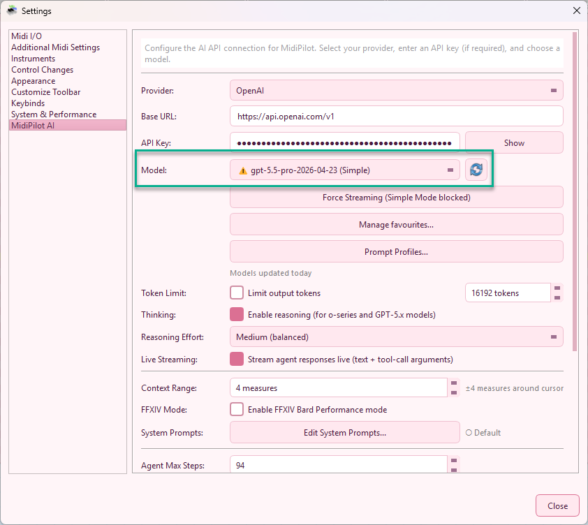
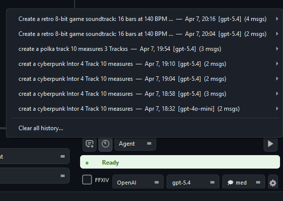

MidiPilot Modes and Conversations
MidiPilot answers in one of two ways: Simple mode sends a single request, Agent mode works step by step and calls tools between the steps. This page covers both modes, how answers stream in while they are still being written, the two shortcuts that start a conversation from what is already on screen, and where finished conversations are kept.
Simple Mode (One-Shot)
Simple mode sends a single API call to the AI model containing your instruction, the current editor state, selected events, and surrounding musical context. The model responds with one complete answer - no follow-up calls, no iterative loop.
How It Works
- Your prompt is bundled with a JSON snapshot of the editor (cursor position, active track, tempo, time signature, selection, and ±5 measures of surrounding events)
- Everything is sent as one request to the model
- The model returns a single JSON response with one or more actions (
edit,delete,create_track,set_tempo, etc.) - MidiEditor executes all actions from that response at once
When to Use Simple Mode
- Quick edits - transpose a selection, quantize notes, change velocities
- Small segments - work on a specific track or a few measures
- Focused tasks - delete notes, change instruments, adjust tempo
- Fast turnaround - one call means instant results with no waiting for multi-step loops
Limitations
- Token limit risk - Complex requests (many tracks, long passages) can exceed the model’s output token limit. When this happens the response is truncated, which can result in incomplete or broken edits
- No tool access - The model cannot call tools to inspect the file or request additional context. It works only with whatever was included in the initial snapshot
- No self-correction - If something goes wrong, it cannot verify or retry. You have to undo and try again manually
If MidiPilot detects a truncated response (finish_reason: "length"), it will display a warning suggesting you switch to Agent mode for the task.
Agent Mode (Multi-Step)
Agent mode is the powerhouse for complex compositions and large-scale edits. Instead of squeezing everything into one response, the AI works iteratively - planning, executing, inspecting, and adjusting across multiple API calls until the task is complete.
How It Works
- Your prompt is sent along with the system prompt and a set of 33 tools (plus 5 FFXIV tools when FFXIV mode is on) the model can call
- The model responds with one or more tool calls (e.g.,
create_track,insert_events,get_editor_state) - MidiEditor executes each tool call and sends the results back to the model
- The model reviews the results, decides the next step, and issues more tool calls
- This loop continues until the model decides the task is complete (or the max steps limit is reached)
Why This Matters
- No token limit risk - Work is split across many smaller API calls, so each individual response stays well within token limits. No truncation, no data loss
- Self-monitoring - The model can call
get_editor_stateorquery_eventsat any time to inspect what it has built so far, catch mistakes, and correct them - Complex compositions - Multi-track arrangements, genre conversions, full orchestrations - tasks that would overwhelm a single response are handled step by step
- Parallel tool calls - The model can issue multiple tool calls in a single step (e.g., create three tracks at once), speeding up large jobs
- Granular undo - Each tool call from an Agent run gets its own undo step. Press Ctrl+Z to revert one action at a time, keeping the rest intact
Agent Steps Panel
During an Agent run, a collapsible Agent Steps panel appears below the chat showing real-time progress: each tool call, its parameters, and results. The agent loop can also stream live reasoning summaries, assistant text, and tool-call argument progress while the step is still being generated. Step indicators use theme-aware colors that adapt to dark and light mode (⏳ pending, 🔄 active, ✅ done, ⚠ retrying, ❌ failed). The panel grows with the run and scrolls once it reaches its height; the list follows the step that is running. Drag the divider between the chat and the panel to give it more or less room - the height you choose is kept for later runs. When the run ends, the panel moves into the chat history below the final reply.
When to Use Agent Mode
- Composing from scratch - “Create a jazz waltz with piano, bass, and drums”
- Multi-track work - Adding harmonies, arranging for multiple instruments
- Genre conversion - “Make this classical piece into a metal version”
- FFXIV setups - Preparing an 8-track octet with channel mapping and drum conversion
- Analysis tasks - “Check all tracks for issues and fix them”
Configuration
| Setting | Description |
|---|---|
| Agent Max Steps | Maximum tool calls per request (5-100, default 50). Increase for very large compositions. |
| Token Limit | Optional output cap. Agent mode is less sensitive to this since each call is smaller, but very low limits can still truncate individual steps. |
Agent Conductor & Working State
The agent loop is wrapped by a lightweight conductor that owns a compact, program-managed working state: the user goal, the inferred task type, a list of confirmed facts (what the model has already accomplished), the last tool result, the active constraints (e.g. FFXIV rules), and a counter of consecutive failed write attempts.
- After every successful tool call, the conductor distils a one-line confirmation into the working state (e.g. “Tempo set to 82 BPM”, “8 tracks created”) so the model resumes from real progress instead of re-deriving it from raw tool output.
- After a rejected write (validation error, FFXIV violation, capability error…), the conductor injects a short, positive rejection guidance - describing what should be tried next instead of restating what failed.
- If two consecutive write attempts fail without making progress, the conductor performs a bounded-failure stop and reports the remaining problem in plain language instead of looping forever.
- The run remembers the document it is bound to. If you switch to another tab while MidiPilot is working, its edits still land on that document and its selection.
Working across tabs
By default an Agent run works on the document it was started on, even while you look at other tabs.
When you explicitly ask about another open tab, the agent can consult it without leaving your document:
list_documents shows what is open, get_document_overview summarizes one tab,
and import_tracks_from_document copies whole tracks from it into the document being edited
(dry run first, your confirmation required, one undo step).
Asking the agent to work on another tab makes it call switch_document: the run
re-binds to that document, and every following read and write acts there. The visible tab does not
change - the chat stays in front of you and shows a “Switched to …” line instead,
and each step taken in another document is labeled with that document's name in the Agent Steps panel.
Undo steps live in the document each edit was applied to: switch to that tab to undo them. A run that
touched more than one document ends with a summary line listing them all.
GPT-5.5 model-isolation policy
For OpenAI gpt-5.5*, MidiPilot applies a small set of model-specific mitigations through a central policy table - nothing else is touched. Currently:
- Schema-light tools - the
insert_events/replace_eventsJSON schema drops thepitch_bendbranch that this model frequently mis-emits. - Sanitised, positive rejection guidance - rejection messages avoid phrasing the model is known to over-react to.
- Serial tool calls + low reasoning effort on the OpenAI Responses API (
parallel_tool_calls: false,reasoning.effort: "low").
On OpenRouter, only the schema-light tools and prompt sanitisation apply (no Responses-API knobs). On every other model, including all current OpenAI gpt-5*/gpt-4o/o-series, Pitch Bend and parallel tool calls remain unchanged.
Response Streaming
MidiPilot uses Server-Sent Events (SSE) to stream responses in real time. Instead of waiting for the entire response to complete, Simple mode can show text or action composition immediately, and Agent mode can show live reasoning, assistant text, and tool-call progress while each step is still being generated.
How It Works
- Simple text - A chat bubble appears immediately and grows as text arrives
- Simple actions - JSON action responses show a subdued composing indicator, then execute once the complete payload is available
- Agent thoughts - Reasoning summaries stream into the grey italic thought block when the provider exposes them
- Agent tools - Tool calls are reconstructed from streamed deltas, then dispatched through the same undo-safe tool path as non-streaming Agent mode
- Fallback - Broken streams automatically retry without streaming and mark the model temporarily for the current app session
- Token capture - Usage statistics are captured from the final SSE event when the provider reports them
When Streaming Is Used
| Mode | Streaming | Reason |
|---|---|---|
| Simple - text response | ✅ Yes | Reduces perceived latency |
| Simple - JSON actions | ✅ Preview | Shows action composition, then executes after complete JSON arrives |
| Agent - Chat Completions | ✅ Yes | Streams assistant text and tool-call argument deltas when the provider supports them |
| Agent - OpenAI Responses API | ✅ Yes | Streams text, reasoning summaries, and function-call arguments for GPT-5-family tool use |
| Agent - Gemini native | ✅ Yes | Streams thought summaries and whole function calls via :streamGenerateContent |
| Broken provider/model stream | ⚠ Fallback | Retries non-streaming and marks the model for the current app session |

(Simple), (Agent), or (Simple+Agent) in the model dropdown until you re-enable streaming for that modelNon-Streaming Reference Run
For comparison, here is the same Agent loop running without live streaming - either because the provider does not support it, the user disabled Live Streaming in settings, or a previous request hit the per-session streaming-fallback marker. Tool calls and assistant text still arrive correctly, just in one chunk per round-trip instead of progressively.
Ask MidiPilot About a Selection
The quickest way to start a conversation about the music in front of you: select notes in the editor, right-click them and choose Ask MidiPilot about the selection. There is no dialog and nothing to fill in - the question goes out immediately.
MidiPilot writes that question for you, and it describes what you pointed at: how many notes are selected, the bar or bar range they sit in, the track they belong to (by name, or “across N tracks” when the selection spans several), and the pitch range from the lowest to the highest note. The selected notes themselves travel along with the question as data, so the answer is about your actual material rather than about a description of it.
- The panel comes to you - if the MidiPilot panel is hidden, it is shown and raised, and the answer lands there like any other reply.
- Your draft survives - a half-written prompt in the input box is put back once the question has been sent, with the cursor at its end. The entry never eats what you were typing.
- It asks, it does not edit - the question is deliberately an analysis request: what stands out, and is there anything worth improving. Once the selection is in the conversation, follow up with the change you actually want (“make the second half quieter”, “double this on a harp”) and MidiPilot already has the context.
- It appears only when it can work - the entry is in the menu while an AI provider is configured. Without one the chat input is disabled, so the entry would promise an answer it cannot deliver.
- Notes only - the summary is built from selected notes. If the selection holds no notes, the panel simply opens with the cursor in the input so you can ask in your own words.

Right-click a selection - the entry sends the question straight to MidiPilot with the notes attached.
Edit → Ask MidiPilot… is the smaller version of the same idea: it opens the panel and puts the cursor in the input without sending anything.
Questions About the Editor Itself
MidiPilot does not only work on your music - it also answers questions about MidiEditor AI. Ask
“How do I split drums?” or “What does the voice-load lane show?”
and it looks the answer up in the built-in manual instead of guessing: search_help
finds the matching sections, get_help_section reads the best one in full, and the
reply is written from that text with the manual page named, so you can open the page and read the
rest.
- Grounded in the manual - the answer comes from the same pages you are reading here, and the reply cites the page and section it used.
- Offline - the manual is stored inside the application and searched locally. Only the conversation with your AI provider needs the network; looking things up does not.
- In step with the manual - the searchable copy is generated from the manual pages, so it says what the manual says.
- Agent mode - looking something up is a tool call, so this happens in Agent mode. Simple mode sends a single request without tools and answers from the model’s own knowledge.
Both halves live in the same conversation: ask how a feature works, get the answer with its page reference, then ask MidiPilot to use that feature on the open file. External clients connected to the MCP server get the same two tools.

A question about the editor itself - MidiPilot looks the answer up in the manual and says which page it comes from.
Conversation History
MidiPilot automatically saves every conversation as a JSON file. You can browse, search, and resume past sessions at any time.
How It Works
- Auto-save - After every assistant response, the conversation is saved (debounced 2 seconds) to
AppData/MidiPilotHistory/ - Associated with MIDI file - Each conversation records which MIDI file it was working on
- History button - Click the 📜 history icon in the toolbar (next to New Chat) to browse past conversations
- Turn metadata - Agent reasoning, executed steps, latency, provider, model, and token counts are stored with each assistant turn
- Resume - Click any past conversation to load it back into the chat and continue where you left off
- Persistent across sessions - Conversations survive app restarts
Conversation File Format
Each conversation is stored as a single JSON file containing the full message history, model/provider info, token usage, per-turn metadata, and the associated MIDI file path. Files are human-readable and can be exported or shared.

See also
- MidiPilot - Your AI Copilot - the overview: key features, getting started, the chat panel, and the mode comparison table.
- MidiPilot in FFXIV Bard Mode - what the FFXIV checkbox adds on top of both modes described here.
- MidiPilot Settings and Providers - the provider, model, streaming, and reasoning settings these modes run on.
- MidiPilot AI Tools Reference - every tool Agent mode can call, and the MCP server that exposes the same set.